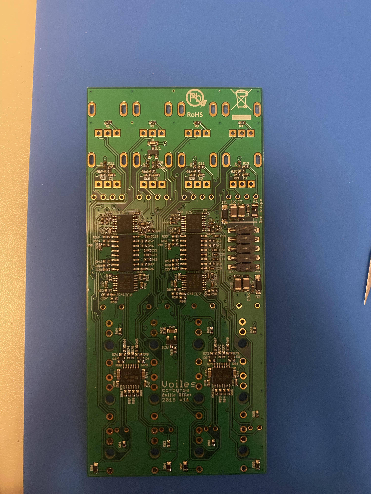
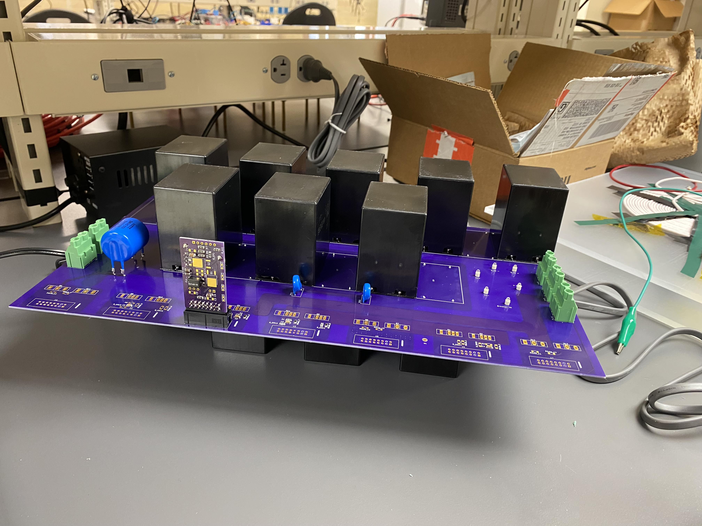
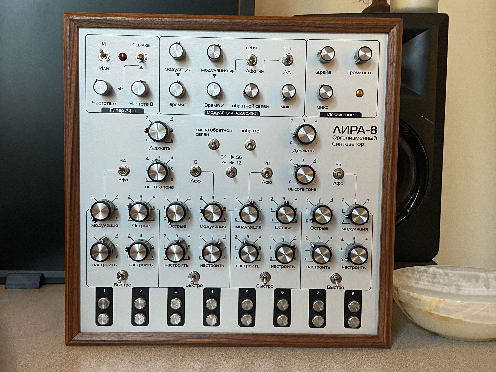

Tyler Bissonnette — Electrical Engineer
I build hardware. Specializing in analog electronics, PCB layout (KiCad), and Digital Signal Processing.

Polyphonic Analog Synthesizer
Designed and routed a custom 4-layer PCB. Hand-soldered 0402 SMD components to build a fully analog 4-voice synth.
KiCad • 0402 SMD • LTspice • Op-Amps

High-Voltage Solid-State Circuit Breaker
Simulated and built solid-state switching architecture, including power board and gate drive PCB layouts.
LTspice • Power Electronics • Hardware Integration

Soma Lyra-8 DIY Build
Sourced and assembled the complex Lyra-8 analog synthesizer kit. Calibrated analog oscillators and debugged through-hole hardware.
Through-Hole Soldering • Analog Debugging • Calibration